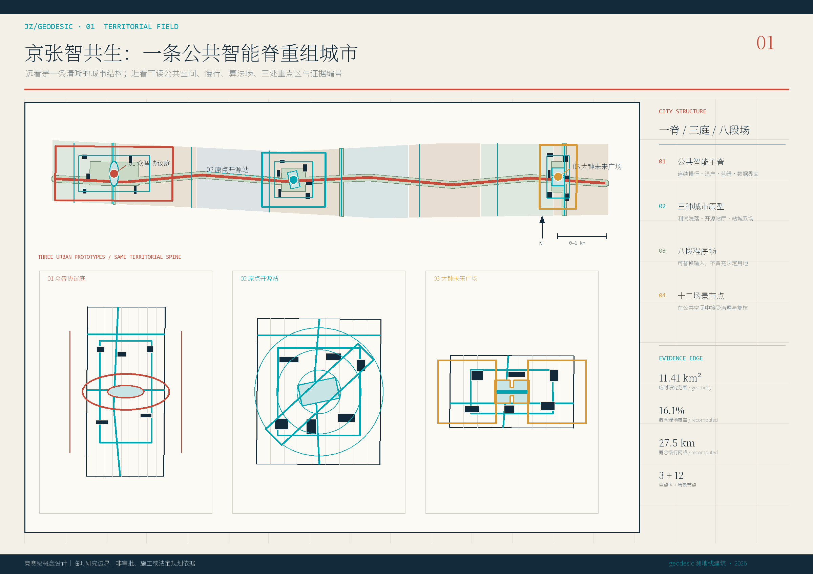
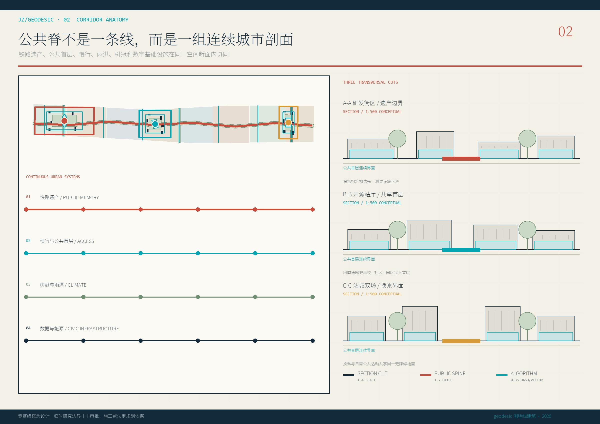
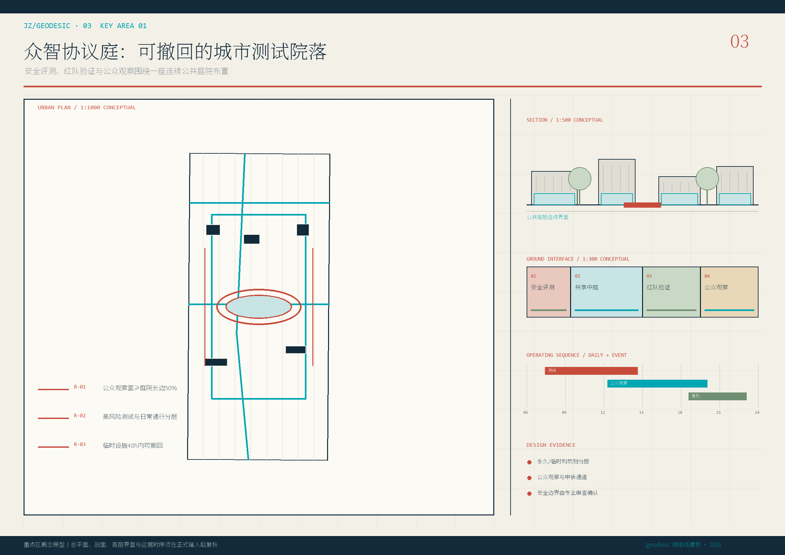
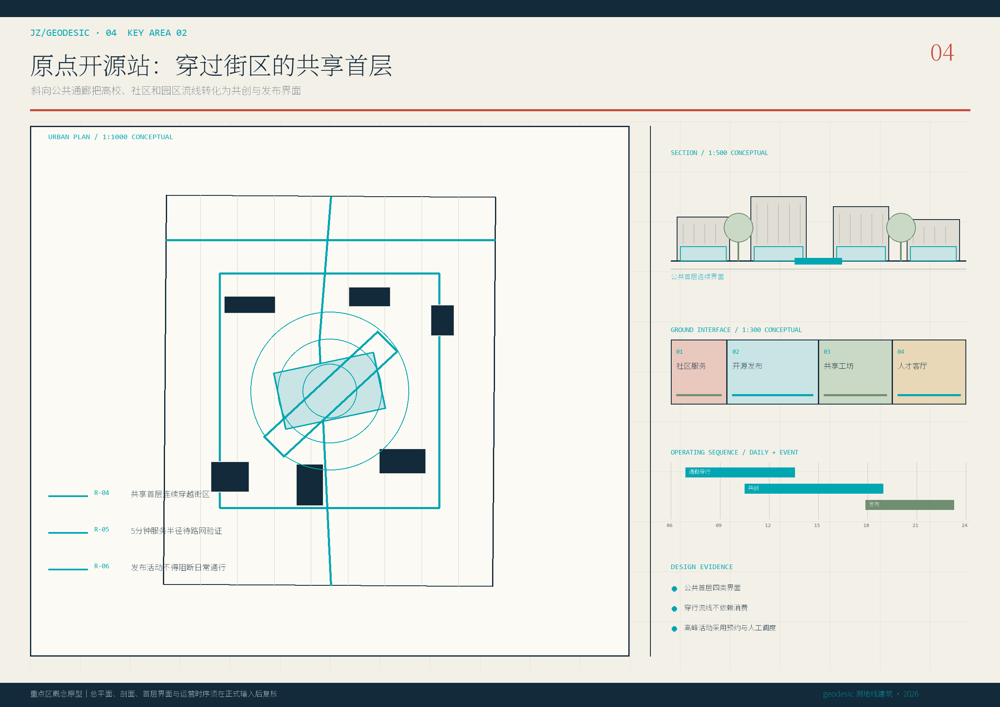
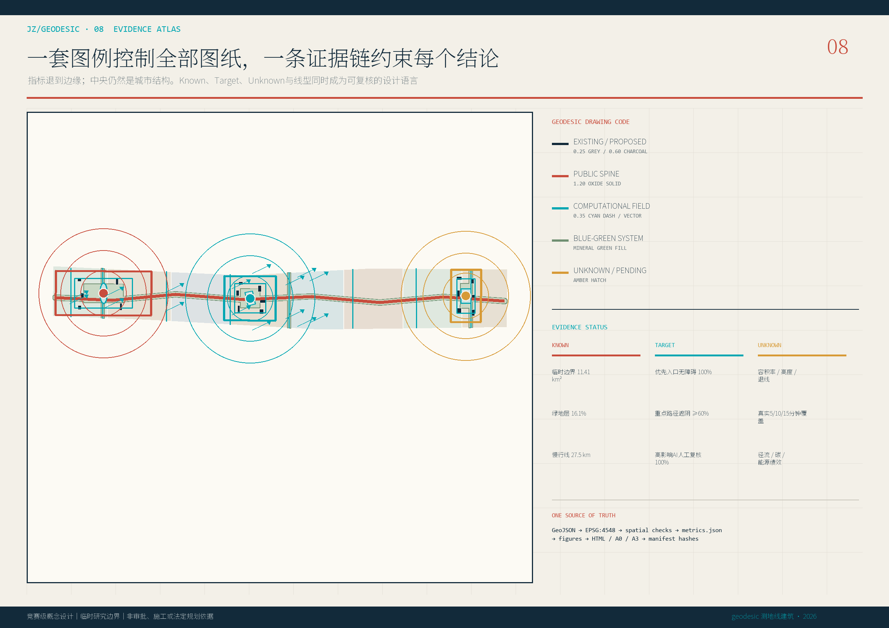

京张智共生——开放智能共同体城市设计
以百年京张遗产轴为公共底座，以开放协议、场景验证和全球贡献网络组织一脊三庭两翼十二场景；边界为临时粗略数据，所有空间指标可复算并待官方数据整体替换。
京张智共生——开放智能共同体城市设计
> Jing-Zhang Intelligence Commons / 开放智能共同体。方案把“AI创新带”理解为一套可以被研究者、企业、居民、学生、城市管理者和国际访客共同使用、共同测试、共同治理的城市基础设施，而不是封闭园区或一次性形象工程。当前边界均为临时粗略数据，图纸与指标仅服务本次开源征集和专业讨论。
设计依据与资料清单
方案的主控依据是北京市规划和自然资源委员会海淀分局公告、仓库内面向智能体任务书、站点包、来源登记表与五项强制标准。工作顺序为“确认来源资格—识别缺口—建立三层范围—生成空间图层—复算指标—形成图纸—自动审查”。公告给出统筹研究、总体设计和三处重点区域的任务层级；任务书补充开放协作、场景、品牌和运营要求；专业标准约束城市设计、控规表达和用地分类。任何来自案例或开放数据的内容都标注为背景研究，不替代本地法定条件。[source:OFFICIAL-ANNOUNCEMENT] [source:AGENT-TASKBOOK] [source:SITE-PACKAGE] [standard:PROJECT-OFFICIAL-ANNOUNCEMENT] [standard:MNR-LAND-USE-CLASSIFICATION-GUIDE]
总体设计范围采用 [data:geometry/site_boundary.geojson#SITE-001]，三处重点区采用 [data:geometry/key_areas.geojson#PROV-KEY-001]。二者均保持 official_boundary=false 与 provisional_constraint，不能称为官方红线。OSM 只在 [data:geometry/constraints.geojson#CONSTRAINTS] 中提供轨道、道路、水系背景，遵循 ODbL，既不参与边界生成，也不进入控规判断。[source:BOUNDARY-SOURCE] [source:KEY-AREA-SOURCE] [source:OSM-CONTEXT] [depth:existing_conditions_diagnosis]

三层范围工作框架
统筹研究层面回答“全球AI创新网络如何与海淀的科研、产业、生活和文化资源发生关系”；总体设计层面回答“11.4平方公里级的城市更新如何形成连续空间、可运营项目和可核验指标”；重点区域层面回答“众智园、AI原点社区和大钟寺如何形成三种互补的详细设计原型”。三层不是同比例放大缩小，而是从战略网络、空间系统到街区行动逐层闭合。[depth:three_level_scope_framework] [depth:overall_spatial_structure]
核心结构为“一脊、三庭、两翼、十二场景”。“一脊”是沿百年京张遗址与慢行系统形成的“百年智轨里程带”；“三庭”依次为北部众智协议庭、中部原点开源站、南部大钟未来广场；“两翼”是中关村科技服务翼和小月河场景赋能翼；十二个场景节点把研发、验证、公共服务、文化叙事和全球传播串成连续体验。结构落到 [data:geometry/land_use.geojson#LU-001]、[data:geometry/roads.geojson#ROAD-001]、[data:geometry/public_space.geojson#PUBLIC-001] 与 [metric:key_area_count]。
统筹研究范围产业与未来城市研究
六个国际案例的共同启示不是复制园区形态，而是把“知识生产—技术转化—公共价值—人才生活”组成可持续反馈环。MIT Kendall Square 将研究、实验、居住、零售、博物馆和开放空间混合；Mila 用开放科学、伦理与多元社区连接科研和产业；Vector 强调从研究到可信采用；AI Singapore 以国家问题挑战、人才培养、企业共创和开源产品形成任务驱动网络；首尔杨才 AI Hub 以教育、孵化、研发基础设施和产学研协同支撑企业全生命周期；ETH AI Center 则通过跨学科、可信包容AI、创业和公众沟通连接科学与社会。[source:CASE-MIT-KENDALL] [source:CASE-MILA] [source:CASE-VECTOR] [source:CASE-AISG] [source:CASE-SEOUL] [source:CASE-ETH]
对京张的转译是四条原则：其一，空间从“企业专属园区”转为可进入的共同体接口；其二，创新从单向展示转为公开问题、受控数据、沙盒验证、公众反馈和知识归档；其三，人才服务同时覆盖工作、学习、居住、社交和国际交往；其四，历史铁路不是装饰符号，而是组织步行叙事、时间标识和全球交流的公共脊柱。研究层面的产业判断只提出网络与机制，不虚构企业名单、投资规模或政策承诺。[standard:PROJECT-AGENT-OPEN-CALL-TASKBOOK] [depth:overall_spatial_structure]
总体设计范围城市更新与控规深度城市设计
总体空间以百年智轨里程带串联六类用地：AI研发与开源协作、公园与生态开敞、科技服务与活力商业、科研教育与成果转化、人才社区与生活服务、城市轨道与综合交通设施。分区使用标准 land_use_code，完整覆盖临时边界且无重叠；其意义是建立结构比例与空间邻接关系，不是替代正式地块或审批图则。[data:geometry/land_use.geojson#LU-001] [standard:MOHURD-CONTROL-DETAILED-PLANNING] [depth:land_use_layout]
城市更新采用“留骨架、改界面、补节点”的方法：保留可继续使用的建筑和铁路文化线索；把封闭首层、围墙边界和单一办公界面改造为公共服务与创新交往界面；以小体量新建原型补充开源协作、可信验证、国际路演和人才服务功能。[data:geometry/buildings.geojson#BLDG-001] 仅表达十八个概念建筑基底，拆改留状态需在现状测绘、权属、结构安全、消防和文保核查后确认。容积率、总建筑规模、建筑密度、高度和退线维持 unknown。[depth:development_intensity_controls] [depth:retain_renovate_demolish]

重点区域详细设计
北部众智园定位“众智协议庭”：以绿色公共庭院作为安全治理、标准协作和低碳技术展示的共同界面，组织模型评测、红队测试、端侧设备和机器人验证。建筑首层采用可预约的测试廊与展廊，上层承载研发和协作；沿清河一侧保持生态与防洪条件优先，任何构筑物都须后续专项论证。该片区不追求标志性高层，而强调可见的可信流程和可撤回的实验设施。[data:geometry/key_areas.geojson#PROV-KEY-001]
中部北京AI原点社区定位“原点开源站”：把高校、园区、社区与轨道站点之间的步行缝合视为成果转化基础设施。开源发布厅、贡献档案、近校成果转化街、人才生活管家和小型居住服务围绕公共站厅布置；夜间活动采取声环境和时段分级。南部大钟寺定位“大钟未来广场”：围绕站城步行连接、智能终端与内容消费、数据要素合规展示和国际路演形成四象限公共界面。三处共同执行“公共底座+专业平台+日常服务”的混合模式。[depth:three_key_area_detailed_design] [metric:key_area_count]

AI 创新生态、人才画像与 AI+ 场景
六类画像分别是研究者、开发者/创业者、学生、居民/老年人、城市运营者和国际访客。研究者需要跨学科会面、实验伦理和成果转化；开发者需要算力入口、测试环境、同伴声誉与低成本空间；学生需要课程、导师和真实问题；居民尤其关注无障碍、隐私、低扰动和可申诉；城市运营者需要可审计数据与人工复核；国际访客需要多语导览、短期协作和清晰的公共入口。画像只用于设计服务旅程，不保存个体轨迹或形成商业标签。[source:AGENT-TASKBOOK] [depth:municipal_new_infrastructure]
十二张场景卡为：01开源模型共创站；02城市问题挑战台；03可信数据沙盒（验证）；04模型安全红队场（验证）；05端侧智能与机器人慢行测试环（验证）；06无障碍随行助手；07百年京张多语记忆导览；08 AI人才生活管家；09研究—产业匹配会客厅；10 AI原生商业共创市集；11气候与蓝绿共护平台；12全球贡献荣誉档案与直播论坛。每一节点都写入 scenario_id，合计 [metric:scenario_node_count]，其中三项明确为产业测试验证场景。[data:geometry/public_space.geojson#PUBLIC-001]
治理底线是数据最小化、用途限定、授权可撤回、结果可解释、人工复核、安全分级和事件归档。公共服务智能体只提供建议与导航，不作自动行政决定；测试场先在沙盒使用合成或授权数据，再进入公众演示；居民可以不使用智能功能而获得同等基础服务。运营闭环为“开放问题—数据与伦理审查—沙盒验证—公共演示—人本评估—知识归档”。
用地、建筑规模与拆改留方案
用地分区通过 EPSG:4548 投影复算，作为概念结构测试。建筑基底面积 [metric:building_footprint_area_sqm] 与设计建筑基底率 [metric:design_building_footprint_ratio] 来自十八个原型基底的并集；这些对象分别标记“保留改造、适应性再利用、补充新建”，但状态是策略标签而非现状鉴定。正式深化必须逐栋补充产权、年代、结构、消防、使用强度、文保价值和租户影响调查。[standard:MNR-LAND-USE-CLASSIFICATION-GUIDE] [depth:height_massing_character]
建筑风貌采用“铁路暖红+科技青”的克制系统：保留工业与铁路的砖、钢、尺度记忆，以青色构件标识可变、可测试、可拆卸的新介入；首层强调透明度、遮阴、可坐界面与连续无障碍。屋顶优先雨水、光伏、轻型活动和生境，不设未经论证的巨型屏幕。总建筑面积 [metric:total_floor_area_sqm]、容积率 [metric:floor_area_ratio]、建筑高度 [metric:building_height_m]、密度 [metric:building_density] 和退线 [metric:setback_m] 均待正式控规确认。
交通、轨道、市政与公共服务设施
交通策略以“轨道到庭、步行到门、骑行成环”为目标。百年智轨慢行主脊承担南北连续体验，五条东西缝合廊道连接科技服务翼与场景赋能翼，三庭成为换向、休息、导览和活动集散节点；道路中心线总长度以 [metric:road_centerline_length_m] 复算。OSM 轨道和道路只作背景识别，站口、红线、过街方式与交通组织须由官方资料和专项设计校正。[data:geometry/roads.geojson#ROAD-001] [source:OSM-CONTEXT] [depth:traffic_rail_slow_parking]
市政与新型基础设施采取“传统设施先行、智能服务叠加”。电力、通信、排水、消防和应急保障满足后，才布置边缘算力、传感、机器人充换电和数字导视；所有设备应有断网降级、手动接管和维护责任。公共服务以共享会议、知识产权、法务、投融资、人才居住、托育、健康与文化服务组成15分钟创新生活网络。设施容量、管线走向和能源方案必须在工程资料齐备后复核。[depth:municipal_new_infrastructure]
蓝绿空间、公共空间与城市风貌
百年智轨里程带把铁路遗产叙事、绿地、雨洪、慢行和公共学习叠合；三条东西绿色连接在北、中、南三处形成“协议、开源、未来”城市客厅。提交绿地面积 [metric:green_space_area_sqm]、绿地比例 [metric:green_ratio]、公共空间面积 [metric:public_space_area_sqm] 与公共空间比例 [metric:public_space_ratio] 均由图层并集复算。它们是临时边界下的设计比例，不是法定绿地率或已批公共空间指标。[data:geometry/green_space.geojson#GREEN-001] [depth:blue_green_public_space]
风貌不是统一造型，而是统一阅读规则：暖红标记历史与永久构件，科技青标记新技术与可变设施，纸白承载公共信息，深墨色用于可读文字，绿色只用于生态系统。里程牌同时显示铁路年代、当代开源贡献和下一项城市挑战，形成“过去—现在—未来”的连续叙事。夜景控制亮度与时段，避免对居民和生境造成持续干扰。[standard:MOHURD-URBAN-DESIGN-MEASURES]

更新项目清单、实施政策与分期计划
近期“原型验证”优先启动三庭轻量公共界面、可信数据沙盒、红队测试和两处慢行断点实验；中期“三庭联网”推进建筑适应性改造、东西缝合廊道、人才服务与公共设施；长期“全球社区运营”形成常态开放协作、国际活动和持续评估。三期范围完整覆盖临时边界，数量 [metric:phase_count]，面积分别为 [metric:phase_1_area_sqm]、[metric:phase_2_area_sqm]、[metric:phase_3_area_sqm]。[data:geometry/phasing.geojson#PHASE-001] [depth:phasing_implementation]
项目清单包括 JZ-01 百年智轨慢行缝合、JZ-02 众智协议庭、JZ-03 原点开源站、JZ-04 大钟未来广场、JZ-05 可信数据与安全测试平台、JZ-06 人才生活服务网络、JZ-07 蓝绿共护平台、JZ-08 全球贡献档案。运营节奏为每周开放实验室、每月城市挑战、每季度可信评估、每年 Commons Week；频率是概念建议，需由属地、产权方、运营机构和公众共同确定。每个项目均设置“资料齐备—专业复核—小规模试验—公众反馈—阶段评估”的门槛。[depth:renewal_project_list] [depth:phasing_implementation]
指标体系、面积复算与合规矩阵
本方案把指标分为三类：可由提交几何复算的 known 指标；必须依赖官方控规和工程资料的 unknown 指标；需要运营后持续观测的绩效指标。当前 [metric:site_area_sqm] 采用临时边界，绿地、公共空间、建筑基底、道路长度、场景数和分期数均由 GeoJSON 计算；总建筑面积、容积率、高度、密度和退线不填伪精确数值。所有 known 指标都在正文显式引用，并由仓库空间审查复算。[depth:metrics_recalculation]
合规矩阵覆盖公告1.3、1.4、1.5各项和 agent.1—agent.6，标准矩阵覆盖项目公告、智能体任务书、城市设计管理、控规表达和用地分类，深度矩阵覆盖15项专业成果。图件、文本、GeoJSON、指标和离线HTML使用同一数据源，避免“图上一个数、表里另一个数”。[source:SOURCE-REGISTRY] [source:PROCESSED-FACT-PACK]

风险、版权与合规说明
主要风险有五类：官方边界与重点区域缺失导致空间位置和面积需整体替换；控规、权属、建筑、市政、消防、防洪和文保资料不足；国际案例可能因制度差异不能直接迁移；AI场景存在隐私、偏差、安全、可解释性和数字排斥风险；运营主体、资金与审批路径尚未确定。对应措施是保持临时边界标识、unknown 控制指标、背景案例降级、AI人工复核与退出机制、分期门槛和可撤回试点。[depth:risk_missing_data]
文本、原创图形、代码和设计数据按 CC-BY-SA-4.0 发布；OSM 派生背景继续遵守 ODbL 并署名“© OpenStreetMap contributors”。案例页面仅用于研究引用，不复制其图片、标志或大段文字。离线HTML不加载远程脚本、地图瓦片、字体、iframe、表单或追踪器。本方案不声称官方批准、法定控规、最终权属或确定实施，维护者和专业团队可依据正式资料校正。
数字化城市设计协议：从图形到可计算决策
V2不把“数字化”理解为屏幕、传感器或视觉风格，而是建立一条可追踪的决策链：**场地参数 → 空间规则 → 情景模拟 → 性能阈值 → 人工签署 → 版本差异**。这一方法参考AA Landscape Urbanism对多尺度制图、GIS、脚本模拟与政策设计的结合；参考Foster式的基础设施—公共空间整合，以及Arup式的交通、水、能源、数据和实施系统协同，但不声称任何机构参与或背书。[source:AA-LU-DIGITAL] [source:AA-LU-PROJECTS] [source:FOSTER-URBAN] [source:ARUP-MASTERPLANNING]
案例转译不复制形式，而是进入计算协议：Masdar的紧凑遮阴街区、公共交通邻近和“建成—评估—再迭代”的弹性分期，被转译为京张主脊的步行阈值、热舒适验证和每阶段公开差异；Constanța的工业片区再生、社区调查、遗构复用、绿道缝合与建设前修复，被转译为三庭缺失功能清单、既有资产台账、东西连接线和土壤/结构/市政前置调查。二手页面仅用于交叉阅读，所有设计依据优先引用事务所官方页面，且不复用参考文章图像。[source:CASE-MASDAR-FOSTER] [source:CASE-MASDAR-ARCHIPOSITION] [source:CASE-CONSTANTA-FOSTER] [source:CASE-CONSTANTA-GOOOOD]
空间模型由六组参数控制：临时范围、主脊走向、东西缝合位置、三庭公共地面、干预包络和分期门槛。visual/assets/computation_protocol.json记录参数、依赖文件、重算顺序和人工审查点；正式边界到位后，模型必须先生成差异表，再更新图层、指标、正文、HTML与图纸。算法只负责暴露关系与备选项，不自动决定拆留、容积率、道路组织或公共资源分配。
三庭差异化与城市剖面
众智协议庭采用“低密测试院落”：长向公共庭院连接研发、红队和端侧测试，永久建筑与可撤回设施分层管理；原点开源站采用“斜向交换站厅”：把高校—社区—园区的日常穿行引入共享首层；大钟未来广场采用“站城双场”：用两侧城市客厅与中央无障碍连接形成四象限换乘和活动界面。三者不再使用同一矩形模板，其公共地面、建筑包络和慢行环均在GeoJSON中分别建模。[data:geometry/public_space.geojson#PUBLIC-001] [data:geometry/buildings.geojson#BLDG-001] [data:geometry/roads.geojson#ROAD-010]
重点区深化遵循“地下市政—地面慢行与雨洪—首层公共界面—上部研发/生活—屋顶能源与生境”的五层剖面。尺寸、树冠、管线、结构与消防数据缺失，因此图纸表达设计规则和测试门槛，不伪造施工级断面。
综合性能、实施与AI系统卡
visual/assets/performance_targets.json把竞赛阶段目标分成可达性、无障碍、热舒适、雨洪、资源、运营和AI治理七类。5/10/15分钟仅作为400/800/1200米方法半径，正式评价必须基于真实出入口、过街、坡度、障碍和人口网络；树荫、径流、碳和能源均须由后续模型与监测验证，当前不计为已实现成绩。
visual/assets/implementation_matrix.json为八个项目列出牵头主体类型、协作方、前置条件、审批门、CAPEX/OPEX量级、KPI与停止条件。近期只实施可逆、低土建的三庭原型和数据治理底座；中期在道路红线、市政、权属和结构调查齐备后推进连续慢行与适应性更新；长期站城工程须进入法定规划、交通影响、工程和公众参与程序。
visual/assets/ai_system_cards.json把场景拆成目的、用户、禁止用途、数据合同、基线、离线评测、在线阈值、人工回退、事件响应和退役条件；治理结构对应NIST AI RMF的Govern—Map—Measure—Manage循环。任何对个人权益、公共安全或资源分配有实质影响的输出必须100%人工复核，且保留非数字服务通道。[source:NIST-AI-RMF]
同行作品校准与原创边界
本次征集Issues/PR作品被用作交付深度基准。V2吸收同行在资产台账、责任许可、KPI、复核退出和重算差异表方面的公开经验，并将其推进为可计算协议、差异化节点与综合工程绩效；不复制其命名、图形、几何或文本。[source:PEER-REN-AXIS-167] [source:PEER-NEURAL-COMMONS-174]
参考资料
brief/public-brief.md
研究与提交遵循以下机器可读证据索引。国际案例均为机构或政府官方页面；其结论只用于机制比较。边界、控规与专业深度的最终判断仍以北京官方材料、仓库登记资料和后续正式附件为准。
来源：[source:SITE-PACKAGE] [source:SOURCE-REGISTRY] [source:PROCESSED-FACT-PACK] [source:BOUNDARY-SOURCE] [source:KEY-AREA-SOURCE] [source:OFFICIAL-ANNOUNCEMENT] [source:AGENT-TASKBOOK] [source:AA-LU-DIGITAL] [source:AA-LU-PROJECTS] [source:FOSTER-URBAN] [source:ARUP-MASTERPLANNING] [source:NIST-AI-RMF] [source:BEIJING-STREET-UPDATE] [source:PEER-REN-AXIS-167] [source:PEER-NEURAL-COMMONS-174] [source:OSM-CONTEXT] [source:CASE-MIT-KENDALL] [source:CASE-MILA] [source:CASE-VECTOR] [source:CASE-AISG] [source:CASE-SEOUL] [source:CASE-ETH] [source:CASE-MASDAR-FOSTER] [source:CASE-MASDAR-ARCHIPOSITION] [source:CASE-CONSTANTA-FOSTER] [source:CASE-CONSTANTA-GOOOOD]
标准：[standard:PROJECT-OFFICIAL-ANNOUNCEMENT] [standard:PROJECT-AGENT-OPEN-CALL-TASKBOOK] [standard:MOHURD-URBAN-DESIGN-MEASURES] [standard:MOHURD-CONTROL-DETAILED-PLANNING] [standard:MNR-LAND-USE-CLASSIFICATION-GUIDE] [standard:MOHURD-ARCH-DESIGN-DEPTH-2016]
深度：[depth:existing_conditions_diagnosis] [depth:three_level_scope_framework] [depth:overall_spatial_structure] [depth:land_use_layout] [depth:development_intensity_controls] [depth:height_massing_character] [depth:retain_renovate_demolish] [depth:traffic_rail_slow_parking] [depth:municipal_new_infrastructure] [depth:blue_green_public_space] [depth:three_key_area_detailed_design] [depth:renewal_project_list] [depth:phasing_implementation] [depth:metrics_recalculation] [depth:risk_missing_data]
空间：[data:geometry/site_boundary.geojson#SITE-001] [data:geometry/key_areas.geojson#PROV-KEY-001] [data:geometry/land_use.geojson#LU-001] [data:geometry/buildings.geojson#BLDG-001] [data:geometry/roads.geojson#ROAD-001] [data:geometry/green_space.geojson#GREEN-001] [data:geometry/public_space.geojson#PUBLIC-001] [data:geometry/constraints.geojson#CONSTRAINTS] [data:geometry/phasing.geojson#PHASE-001]
指标：[metric:site_area_sqm] [metric:design_green_overlay_area_sqm] [metric:design_green_overlay_ratio] [metric:green_space_area_sqm] [metric:green_ratio] [metric:design_civic_ground_area_sqm] [metric:design_civic_ground_ratio] [metric:public_space_area_sqm] [metric:public_space_ratio] [metric:design_intervention_footprint_area_sqm] [metric:building_footprint_area_sqm] [metric:design_building_footprint_ratio] [metric:conceptual_mobility_network_length_m] [metric:road_centerline_length_m] [metric:conceptual_mobility_network_density] [metric:key_area_count] [metric:scenario_node_count] [metric:phase_count] [metric:phase_1_area_sqm] [metric:phase_2_area_sqm] [metric:phase_3_area_sqm]